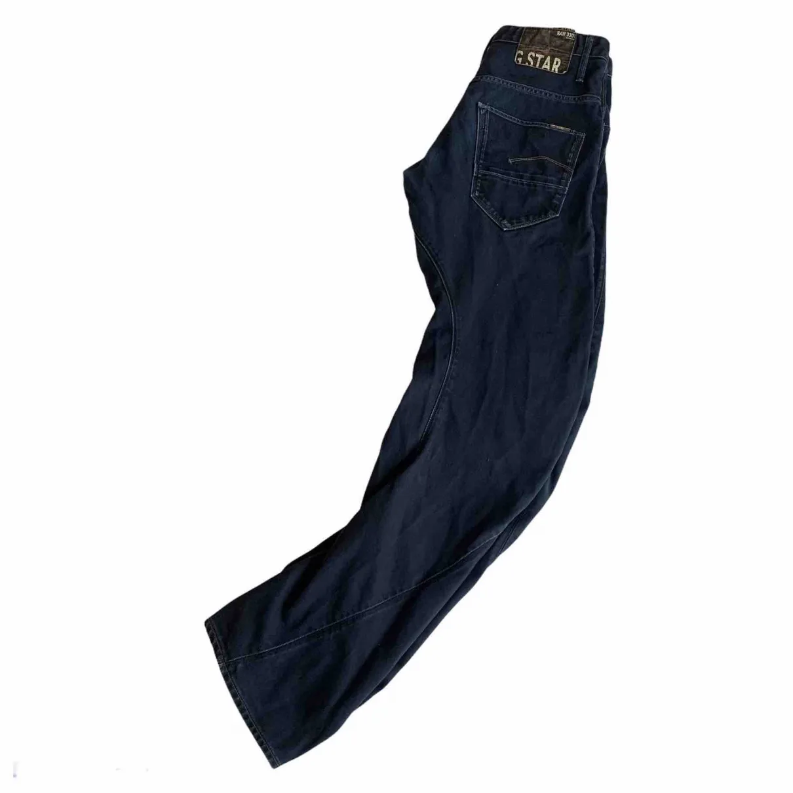
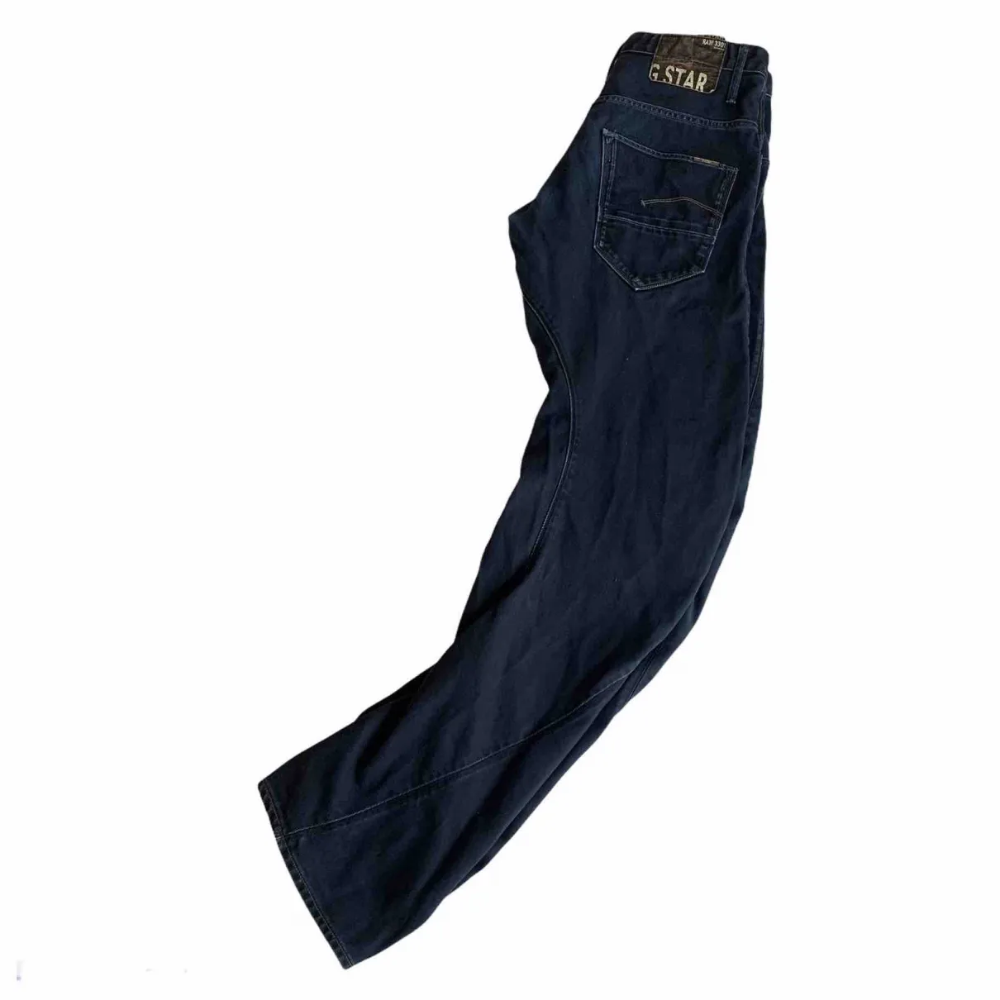

G-STAR
G-Star RAW (commonly called G-Star) is a Dutch designer clothing company, founded by Jos van Tilburg in Amsterdam in 1989. The brand specializes in making raw denim—an unwashed, untreated denim. G-Star is influenced by military clothing. Inspirations of their designs come from vintage military apparel from around the worlds


 
